XRP: In-Kernel Storage Functions with eBPF
This page was written by an AI model to give a high-level overview of the paper. Please check the paper for detail: USENIX.
Microsecond-scale NVMe devices such as Intel's Optane SSD P5800X have made the Linux kernel's storage stack the bottleneck rather than the device. On a random 512 B read against the P5800X, the kernel's file system, block layer and syscall overhead account for 48.6% of total latency, roughly doubling the access time compared to the device alone (Table 1). That overhead is fixed per I/O, so it only gets relatively worse as devices get faster: the paper measures the kernel's share rising from about 15% on older Optane and Z-NAND devices to about half on the latest generation.
The standard fix, kernel bypass through libraries such as SPDK, removes the overhead but at a steep cost: applications must implement their own user-space file systems, give up kernel-enforced isolation between tenants on the same device, and poll for completions instead of using interrupts. Polling wastes CPU when I/O is not the bottleneck, and the paper confirms prior findings that SPDK applications suffer a roughly 3x throughput loss and large tail-latency spikes once the number of polling threads exceeds the number of cores, because busy-polling threads cannot yield cores to each other under Linux's coarse-grained scheduler.
XRP's key idea is to keep the speedup of bypassing software layers while keeping the kernel in charge. Many on-disk index structures used by real key-value stores and databases, such as B-trees and log-structured merge (LSM) trees, generate "auxiliary" I/Os: intermediate reads (for example, interior B-tree nodes) whose only purpose is to find the address of the next read, and which are thrown away once that address is extracted. XRP lets an application register a small eBPF function that runs inside the NVMe driver's interrupt handler, directly on each I/O completion, inspects the just-fetched block, and immediately resubmits the next I/O in the chain, all without returning to user space or passing back up through the file system, block layer, or syscall layer. The approach works because these index structures live in a small number of large files and change their on-disk layout only rarely (observed as roughly one extent change every 159 seconds in a 24-hour production workload), so the minimal amount of file-system state needed to translate and authorize a resubmitted I/O, the paper's "metadata digest", can be safely cached and shared with the interrupt handler.
Mechanically, an application loads a BPF function of a new type (BPF_PROG_TYPE_XRP) and calls a modified read syscall, read_xrp, that passes the function and a scratch buffer. For each I/O, the NVMe driver's interrupt handler invokes the function on the fetched block; the function inspects the block (for example, a B-tree node) and writes the logical offset of the next block it needs into the BPF context. XRP's metadata digest translates that logical offset to a physical one and checks it against the open file's extents, and XRP reuses the completed NVMe request structure to resubmit the next I/O directly from the interrupt handler, repeating until the function signals it is done and the result is copied back to the application.
On a custom B+-tree store (BPF-KV) with a 6-level on-disk index, random-key lookups with XRP have 47-94% higher throughput and 20-34% lower p99 latency than read(), and XRP is only 45% slower than full kernel bypass (SPDK) in that configuration versus read()'s 142%, while not requiring any polling. Integrated into WiredTiger, MongoDB's default storage engine, XRP improves YCSB throughput by up to 24% and cuts p99 read/scan latency by up to 40%, with smaller gains on workloads dominated by in-memory buffer reads or scans.
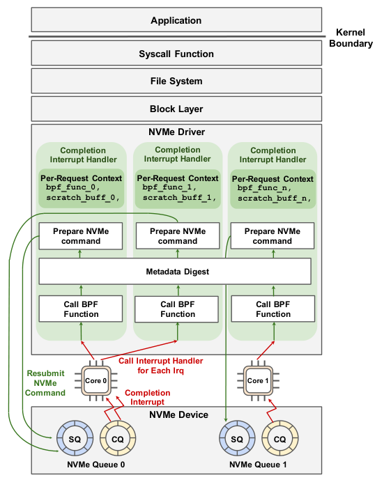
Key takeaways
- On the fastest NVMe devices, the kernel's storage stack (file system, block layer, syscall crossing) accounts for about half of read latency, and this fraction grows as devices get faster.
- Full kernel bypass (SPDK) removes that overhead but forces applications to build their own file systems, gives up isolation, and collapses in throughput and tail latency once polling threads outnumber cores.
- XRP hooks eBPF functions into the NVMe driver's interrupt handler so that "auxiliary" I/Os in index traversals (such as internal B-tree nodes) can be resubmitted directly from the kernel's lowest layer, skipping the file system, block layer and syscall overhead on each intermediate hop.
- The missing piece is a minimal, cacheable channel from the file system to the interrupt handler, the metadata digest, which translates logical offsets to physical ones and enforces per-file access control; it works because target data structures live in few large, rarely-restructured files.
- XRP gets within reach of SPDK's latency (45% slower at depth 6 versus SPDK's own gap of 142% for read()) while, unlike SPDK, letting idle threads yield cores, so it scales better under oversubscription and delivers up to 24% higher YCSB throughput in WiredTiger.
From a syscall-per-hop traversal to in-driver resubmission
Why the kernel stack costs what it costs, what XRP changes, the metadata digest that makes it safe, and how two real key-value stores use it. Results are covered in the Evaluation tab.
1 · Why the kernel storage stack is now the bottleneck
On a 6-core server with an Intel Optane SSD P5800X, a random 512 B read() with O_DIRECT takes about 6.27 µs on average, and 48.6% of that time is spent in software rather than on the device.
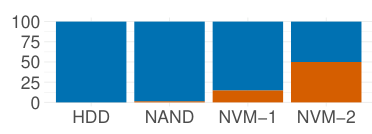
| Layer | Latency | Share |
|---|---|---|
| Kernel crossing | 351 ns | 5.6% |
read syscall | 199 ns | 3.2% |
| ext4 | 2006 ns | 32.0% |
| bio (block layer) | 379 ns | 6.0% |
| NVMe driver | 113 ns | 1.8% |
| Storage device | 3224 ns | 51.4% |
| Total | 6.27 µs | 100.0% |
ext4's file-to-block translation is the single largest software cost, followed by the block layer and the user/kernel crossing. On older, slower NVMe devices (first-generation Optane, Optane 750 NAND, a Seagate HDD) this software overhead was a much smaller fraction of a much larger total latency, so the trend is specific to the newest generation of microsecond-scale devices and will worsen as devices get faster.
2 · Why full kernel bypass is not a general answer
Libraries such as SPDK let an application talk to the NVMe queues directly, paying only the device's own latency. But this requires the application to build and maintain its own file system, removes any kernel-enforced isolation between processes sharing a device, and, because there is no efficient way to deliver completion interrupts to user space, forces applications to busy-poll completion queues. Busy-polling wastes CPU whenever I/O is not saturating the device, and once more polling threads are scheduled than there are cores, Linux's Completely Fair Scheduler (CFS) hands out coarse, multi-millisecond timeslices, so threads that would otherwise yield instead sit queued; the paper reproduces a roughly 3x SPDK throughput loss and large tail-latency spikes in this regime (detailed in the Evaluation tab).
3 · The opportunity: auxiliary I/O and where to hook it
Many on-disk data structure lookups are chains of I/Os where only the final answer matters; each intermediate fetch (an internal B-tree node, say) is read only to extract a pointer to the next block. The paper measures how much is saved by having the kernel itself resubmit such a chain, rather than the application, at two possible hook points: the syscall layer and the NVMe driver, each using a BPF function to parse a block and decide the next address.
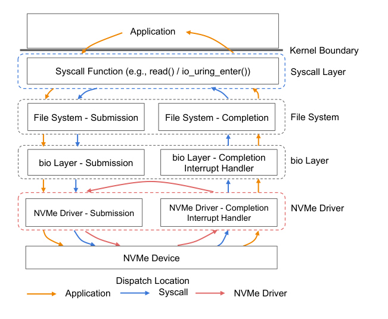
Dispatching from the syscall layer, which only removes the user/kernel crossing, yields at most a 1.25x speedup, consistent with that crossing being just 5-6% of the overhead in Table 1. Dispatching from the NVMe driver, which bypasses the file system, block layer, and syscall layer entirely, cuts latency by up to 49% and improves throughput by 1.8-2.5x on a 10-level on-disk B-tree lookup. This is why XRP's hook sits in the NVMe driver's interrupt handler rather than higher up the stack.
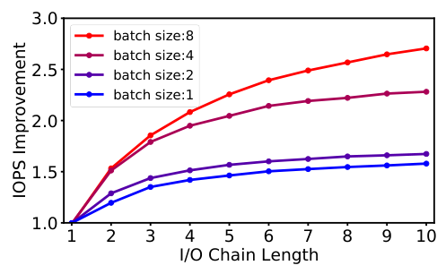
The paper also checks that this complements rather than duplicates io_uring, Linux's batched asynchronous I/O interface: each individual I/O submitted through io_uring still pays the full per-I/O stack cost, so adding a BPF resubmission hook on top of io_uring batching still improves throughput, by up to 1.5x at small batch sizes and up to 2.5x as batch sizes grow.
4 · Two design challenges from running inside the interrupt handler
Hooking into the NVMe interrupt handler introduces problems that a syscall-layer hook does not have, because the interrupt handler has no notion of files, permissions, or concurrent application state.
- Address translation and security. A BPF function's output is a logical, file-relative offset. The NVMe layer has no file-system context to turn that into a physical block address, and without a check, a buggy or malicious BPF function could read any block on the device, including ones in files the caller cannot access.
- Concurrency and caching. Writes issued by the file system land in the page cache, which XRP's interrupt-handler path does not see; if those writes change a data structure's layout while an XRP traversal is in flight, XRP could fetch stale or wrong data. Locking from inside an interrupt handler would be expensive.
The paper's resolution rests on an empirical observation: the files used by popular storage engines (RocksDB, LevelDB, TokuDB, WiredTiger) are few, large, and change their physical layout rarely. In a 24-hour YCSB run against TokuDB's fractal-tree index, the file's extent mapping changed on average only once every 159 seconds, with just 5 of those changes unmapping blocks over the full 24 hours. That stability is what makes it safe to cache a small, authoritative map of file layout for use inside the interrupt handler. It leads to four design principles: restrict XRP to one open file at a time, target data structures whose layout is stable for seconds or more (ruling out traversals that need locks), require applications to manage their own caches outside the page cache, and fall back to normal system calls whenever an XRP traversal fails.
5 · XRP architecture: a BPF hook in the NVMe interrupt handler
XRP augments the NVMe interrupt handler with resubmission logic: a BPF call, a metadata-digest lookup, and construction of the next NVMe request, shown in the paper's architecture figure referenced in the Big Idea tab. When an NVMe request completes, the handler invokes the BPF function pointer stored in the request's bio struct, passes it the just-fetched data, and, if the function is not finished, looks up the next logical address in the metadata digest and resubmits a new NVMe command built by mutating the just-completed request structure (avoiding a kmalloc in interrupt context). This repeats, once per I/O completion, until the BPF function marks itself done, at which point control returns to the application. The kernel changes are about 900 lines of code: roughly 500 for the BPF hook and NVMe driver changes and 400 for the file-system translation step (the metadata digest).
Each BPF invocation gets a context (struct bpf_xrp) with fields the caller inspects (data, the fetched block; done, whether to stop; next_addr/size arrays, up to 16 entries, for fanout) and one field private to the function and application, a 4 KB scratch buffer used to pass in a search key and return results. There is no hard cap on chain length in the prototype, though the paper notes one would be needed in a production kernel, enforced through a counter in the (user-inaccessible) I/O request descriptor.
6 · The metadata digest
The metadata digest is the thin interface that lets the file system share just enough of its logical-to-physical mapping with the interrupt handler to resolve Challenge 1. It exposes two functions: update_mapping, called by the file system whenever its extent mapping changes, and lookup_mapping, called from the interrupt handler to translate a logical offset and simultaneously enforce that the offset falls inside the open file (via its inode).
For ext4, the digest is a cached copy of the extent status tree, kept current by calling update_mapping wherever ext4 inserts or removes extents, and read with read-copy-update (RCU) so lookups are lockless and fast (96 ns on average). A version number per extent detects the rare race where an extent changes between an I/O's issue and its BPF-function invocation; a mismatch aborts the resubmission and falls back to a normal system call. A simpler alternative, routing straight through ext4's existing extent-tree accessors, was rejected because that path takes a spinlock that would be too costly inside an interrupt handler. Only ext4 is implemented, but the same pattern (cache a local copy of the mapping table, update it on changes) applies to other file systems, such as f2fs's node address table.
7 · Resubmission mechanics and limits
- Request reuse. XRP resubmits by overwriting the physical sector/block fields of the just-completed
nvme_commandstruct rather than allocating a new one, which is safe because neither user space nor BPF programs can reach the raw struct. - Fanout is capped by the initial request's segment count. A resubmission can only fetch as many physical segments as the original NVMe request fetched; a BPF function that returns more addresses than that aborts the chain. The paper's workaround is allocating extra dummy commands up front if higher fanout is anticipated.
- The scratch buffer is the only persistent state across hops. It carries the search key in, and carries intermediate traversal state or final results out; at a fixed 4 KB it holds up to 32 72-byte key-value pairs for BPF-KV's range queries, or up to six cached 512 B pages for WiredTiger's page-return protocol (Section 10).
8 · Extending the BPF verifier
The BPF verifier statically proves memory safety by tracking what type of value each register holds (a scalar, or one of several constrained pointer types) and rejecting programs with unbounded loops or out-of-bounds accesses. XRP's context has two pointer-typed fields, data and scratch, that need variable-offset, bounds-checked access (PTR_TO_MEM) rather than the constant-offset access normally allowed for context pointers (PTR_TO_CTX). The authors extended the verifier's per-program-type callback (is_valid_access) so that BPF_PROG_TYPE_XRP can report the size of these buffers to the verifier for bounds checking; they discussed this change with the upstream eBPF maintainers, who found it reasonable.
9 · Synchronization and scheduler interactions
BPF's native synchronization is limited to a single spinlock per program invocation, released before return, and user space can only touch a BPF spinlock indirectly through the bpf() syscall. Because XRP's BPF programs run inside the (non-preemptible) NVMe interrupt handler, they are already, de facto, in an RCU read-side critical section, which is what the metadata digest relies on. Separately, the authors found that on a microsecond-scale device, I/O interrupts for an I/O-heavy process can be serviced inside a co-located compute-heavy process's CFS timeslice, starving it of CPU (to as little as 34% of a "fair" share in their experiments); this is a general interrupt-driven scheduling issue, not specific to XRP or eBPF, and the paper leaves it to future work. XRP bypasses Linux's I/O scheduler at the block layer, but this has little practical effect since NVMe already defaults to the no-op scheduler, with fairness, if needed, available through NVMe hardware queue arbitration.
10 · Application interface and two case studies
Applications load a BPF function once with bpf_prog_load (an existing libbpf call, specialized to the new BPF_PROG_TYPE_XRP type) and thereafter call read_xrp(fd, buf, count, offset, bpf_fd, scratch), a pread-like syscall with two extra arguments: the loaded function's descriptor and a pointer to a 4 KB scratch buffer. Multiple functions can be loaded and selected per call.
- BPF-KV, a key-value store built for the evaluation, uses a B+-tree index (fixed 512 B nodes sized to the device's access granularity, fixed 8 B keys and 64 B values) over an unsorted on-disk log, with a DRAM cache for the top tree levels and an LRU object cache. Its BPF function linearly scans a node's keys to pick the next child pointer; a separate state-machine BPF function supports range scans and aggregations (SUM/MAX/MIN) by resuming from state stored in the scratch buffer across invocations, up to 32 key-value pairs before returning control to the application.
- WiredTiger, MongoDB's default storage engine, is modified (about 500 lines of code) to replace its index-page reads with
read_xrp; its BPF function ports WiredTiger's own B-tree page-parsing logic (with added loop bounds, pointer masking, and variable initialization to satisfy the verifier, using function-by-function verification to keep the program within the verifier's complexity limits). Because WiredTiger's cache can only evict pages whose descendants are already evicted, an uncached page is guaranteed to have no cached descendants, so XRP can safely read the rest of a lookup path from disk in one resubmission chain; traversed pages are returned through the scratch buffer (up to six 512 B pages) so WiredTiger can insert them into its own cache, and the function pauses and is re-invoked when the buffer fills.
See the Evaluation tab for how both systems perform with and without XRP.
Evaluation
What the paper measures on BPF-KV and WiredTiger, in the order the paper presents it.
All experiments run on a single 6-core i5-8500 (3 GHz) server with 16 GB RAM, Ubuntu 20.04, Linux 5.12.0, and an Intel Optane SSD P5800X prototype, using O_DIRECT, hyperthreading disabled, C-states and turbo boost disabled, the max-performance governor, and KPTI enabled. WiredTiger 4.4.0 is used for the database experiments.
| What | Value in the paper |
|---|---|
| Platform | 6-core i5-8500 @ 3 GHz, 16 GB RAM, Ubuntu 20.04, Linux 5.12.0, Intel Optane SSD P5800X, O_DIRECT |
| Workloads | BPF-KV random key lookups and range queries (1M ops, uniform keys); WiredTiger on YCSB A-F over a 1-billion-key, 46 GB database (16 B keys and values) |
| Baselines | XRP, SPDK (kernel bypass), read(), io_uring |
| Metrics | Average and tail (p99, p99.9) latency, throughput (kOps/sec), percentage of requests with latency ≥ 1 ms |
XRP's per-hop cost is close to the device's own latency
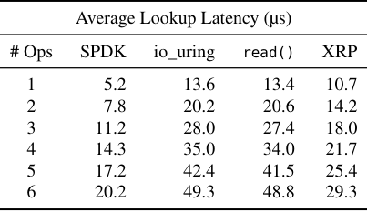
What it shows. Average lookup latency (µs) as a function of index depth (number of on-disk index I/Os per lookup, 1 to 6), for SPDK, io_uring, read(), and XRP, with index and object caching disabled. At depth 1: SPDK 5.2 µs, io_uring 13.6 µs, read() 13.4 µs, XRP 10.7 µs. At depth 6: SPDK 20.2 µs, io_uring 49.3 µs, read() 48.8 µs, XRP 29.3 µs.
What to take from it. XRP's latency grows by about 3.5-3.9 µs per additional chained I/O, close to the device's own 3.224 µs access latency (Table 1), meaning XRP pays close to the minimum possible cost for each resubmitted hop. SPDK is still faster in absolute terms because it skips the kernel entirely for every I/O, including the first one, but its marginal per-hop cost (2.6-3.4 µs) is close to XRP's. At depth 6, XRP is only 45% slower than SPDK, while read() is 142% slower than SPDK, and XRP achieves this without the busy-polling SPDK requires.
XRP cuts tail latency and avoids SPDK's blowup under oversubscription
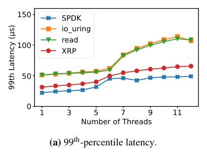
What it shows. Three panels for BPF-KV at index depth 6 under a closed-loop load generator: (a) p99 latency vs. thread count, (b) p99.9 latency vs. thread count (log scale), and (c) percentage of requests with latency ≥ 1 ms vs. thread count (1 to 24 threads), for SPDK, io_uring, read(), and XRP.
What to take from it. With a single thread, XRP cuts p99 and p99.9 latency by up to 30% versus read() and io_uring (and the paper notes this understates the gain, since the closed-loop setup runs XRP at higher throughput than the baselines, so at matched throughput XRP's advantage would be larger). Past roughly 9 threads (more than 3 beyond the 6-core count), SPDK's p99.9 latency rises sharply because its busy-polling threads cannot share cores efficiently; the fraction of requests over 1 ms for SPDK rises from 0.03% at 7 threads to 0.28% at 24 threads, while io_uring, read(), and XRP all stay below 0.01% across the whole range.
Throughput speedup grows with index depth and holds up across threads
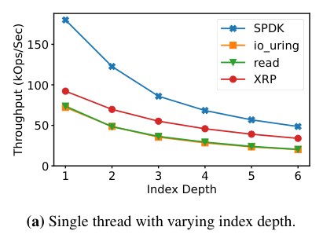
What it shows. Three panels: (a) single-thread throughput (kOps/sec) vs. index depth (1-6) for SPDK, io_uring, read(), and XRP; (b) multi-thread throughput (1-12 threads) at index depth 3; (c) the same at index depth 6.
What to take from it. XRP's throughput advantage over system calls grows with index depth, consistent with it saving one full stack traversal per chained I/O. The speedup does not erode as threads and XRP's BPF functions are spread across more cores, and once thread count reaches 9 or more, XRP matches or beats SPDK's throughput as well, not just its own baseline.
Under an open-loop load, XRP stays stable past the core count while SPDK degrades
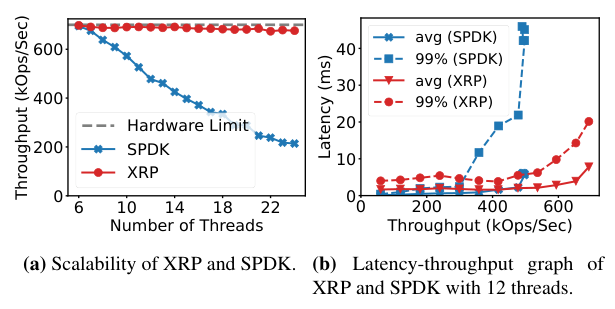
What it shows. (a) Throughput of XRP and SPDK vs. number of threads (6 to 22), against a marked hardware throughput limit (around 5M IOPS for 512 B random reads), using BPF-KV with a 6-level index and one thread per tenant. (b) Average and p99 latency vs. throughput (load-latency curve) for XRP and SPDK with 12 threads.
What to take from it. At 6 threads (matching the core count), both XRP and SPDK reach close to the hardware throughput limit. Beyond 6 threads, SPDK's throughput steadily declines because its busy-polling threads never voluntarily yield, leaving scheduling to CFS's coarse (about 6 ms) timeslices, whereas idle XRP threads yield the CPU to busy ones and throughput stays stable. At 12 threads, both average and tail latency rise faster with load for SPDK than for XRP, since threads wait longer to be scheduled under SPDK's polling model.
XRP's range-query speedup stays roughly constant as ranges get longer
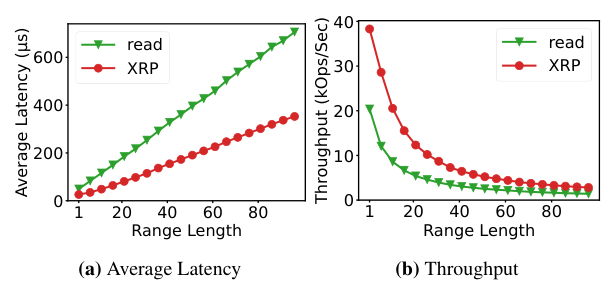
What it shows. (a) Average read latency and (b) throughput for a range query returning a varying number of objects (1 to 80), comparing XRP and read() at index depth 6. Each range query performs one index traversal to the start key, then follows leaf-node pointers to collect subsequent objects.
What to take from it. Even though XRP's range-query BPF function can only return 32 objects per syscall (bounded by the 4 KB scratch buffer), the overhead of re-invoking it is small, so XRP's speedup over read() stays roughly constant as range length grows: XRP pays one storage-stack traversal per 32 values rather than per value.
XRP speeds up WiredTiger on YCSB, with gains shrinking as cache size grows
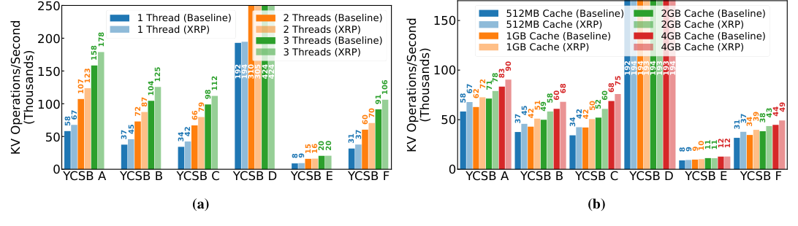
What it shows. WiredTiger throughput (kOps/sec) on YCSB A-F: (a) with 1, 2, and 3 client threads at a fixed 512 MB cache; (b) with a fixed thread count across 512 MB, 1 GB, 2 GB, and 4 GB caches, each with and without XRP.
What to take from it. XRP improves most YCSB workloads consistently, by up to 1.25x, and the improvement is largest at smaller cache sizes, shrinking as more of the working set is served from WiredTiger's in-memory cache rather than disk. XRP gives WiredTiger a smaller boost than it gives BPF-KV because WiredTiger spends only 63% of its time on I/O versus the rest on other processing. XRP barely helps YCSB D (a latest-distribution workload where most reads hit recently inserted, still-buffered data) or YCSB E (scan-heavy, where WiredTiger's iterator interface limits XRP to speeding up only the very first lookup of each scan).
XRP's benefit shrinks under skewed access, and it cuts p99 latency by up to 40%
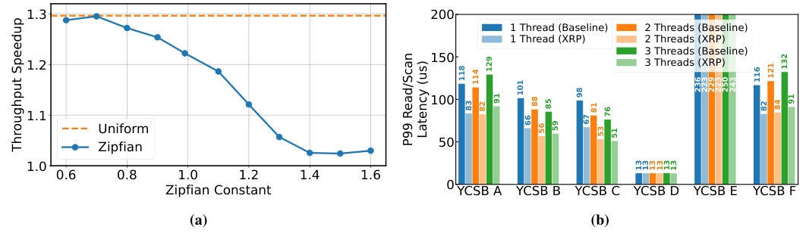
What it shows. (a) Throughput speedup on YCSB C as the Zipfian skew constant varies from 0.6 to 1.6, plus a uniform-distribution point. (b) p99 read/scan latency on YCSB A-F with 1, 2, and 3 client threads at a 512 MB cache, with and without XRP, under a fixed offered load per thread (20 kOps/sec for most workloads, 5 kOps/sec for scan-heavy YCSB E).
What to take from it. XRP's speedup is largest under a uniform access distribution and shrinks as the Zipfian constant increases, because a more skewed distribution raises WiredTiger's cache hit ratio and leaves fewer disk reads for XRP to accelerate; the paper notes skew levels above 0.99 are already very high. Across workloads, XRP cuts p99 read/scan latency by up to 40%, again with the smallest effect on YCSB D and E, matching the throughput results in Result 6.
FAQ
Q·What does "XRP" stand for?▾
eXpress Resubmission Path. The name echoes XDP (eXpress Data Path), the Linux networking eBPF hook that inspired XRP's design.
Q·How is XRP different from just using SPDK (kernel bypass)?▾
SPDK hands the device directly to the application: the application must implement its own file system, there is no kernel-enforced isolation between tenants sharing the device, and the application must busy-poll for completions since there is no efficient way to deliver interrupts to user space. XRP stays inside the kernel: it uses the existing ext4 file system and its own access-control checks, and it is driven by real NVMe interrupts, so idle threads can yield cores instead of spinning.
Q·How is this different from XDP, the networking eBPF hook?▾
XDP's eBPF functions act on a self-contained unit, a network packet, that carries its own routing information (for example, a 5-tuple identifying its flow). A storage lookup is not self-contained in that way: finding the next block in a B-tree traversal needs metadata about the file's layout and permissions that is not present in the block itself, which is exactly the problem XRP's metadata digest solves.
Q·Why can't the NVMe driver just translate logical offsets to physical ones on its own?▾
The NVMe interrupt handler has no concept of files; it only knows about physical device addresses. A BPF function running there produces a logical, file-relative offset (for example, "the pointer stored in this B-tree node"), and without a translation and access-control step, a buggy or malicious function could resubmit a read for any block on the device, including blocks in files the caller has no permission to read. The metadata digest exists to do this translation and check cheaply enough to run from an interrupt handler.
Q·What happens if a file's on-disk layout changes while an XRP traversal is in flight?▾
Each cached extent in the metadata digest carries a version number. After data is read but before it is handed to the BPF function, XRP re-checks the extent's version; if it no longer exists or has changed, XRP aborts and the application falls back to a normal system call. The paper expects this to be rare in practice, since storage-engine files change layout roughly once every few minutes, and expects it to happen only if the application is buggy or malicious, since well-behaved applications already synchronize their own reads and writes.
Q·Why does XRP restrict itself to one open file at a time?▾
It keeps the metadata digest small and the access-control check simple (confirm the requested offset falls inside the one open file's extents), and it matches how the target storage engines actually lay out their indices: each index lives on a small number of large files rather than spanning many files.
Q·Does XRP help with writes or updates?▾
No. XRP accelerates reads of on-disk structures that are stable for seconds or longer; writes still go through the normal path (in WiredTiger, for instance, updates and inserts are absorbed by an in-memory buffer and later flushed to a new immutable file, untouched by XRP). The paper deliberately targets data structures, such as LSM-tree segments, that are immutable once written, or B-trees whose file extents change rarely even if individual pages are updated in place.
Q·What limits how long or how wide a resubmission chain can be?▾
Fanout per completion is capped at 16 addresses by the BPF context's next_addr/size arrays, and in practice further capped by how many physical segments the original NVMe request fetched (a resubmission cannot ask for more segments than the request it reuses). Chain length (number of resubmissions before returning to the application) has no hard limit in the prototype, though the paper says a production system would need one, enforced via a counter in the I/O request descriptor that user code and BPF functions cannot reach.
Q·Why does XRP interact badly with Linux's process scheduler, and is that XRP's fault?▾
The paper observed that when an I/O-heavy and a compute-heavy process share a core, the I/O-heavy process's NVMe interrupts are serviced inside whatever timeslice CFS currently has running, which can starve the compute-heavy process (down to about 34% of a fair CPU share in their worst case). XRP can make this worse by generating longer interrupt chains, but the paper is explicit that the underlying issue is not specific to eBPF or XRP; the same effect can be caused by network interrupts, and the paper leaves a fix to future work.
Q·Can multiple applications or multiple query types share XRP?▾
An application can load several BPF functions and pick which one to use on each read_xrp call, so, for example, a database could register separate functions for point lookups and for filtering aggregations. Each BPF invocation gets its own private context, so no locking is needed across concurrent requests on the same core.
Q·If SPDK is still faster in raw latency, why use XRP at all?▾
SPDK's raw latency advantage only holds when there are no more polling threads than cores. Once thread count exceeds core count, which is common for storage engines running many concurrent requests plus background tasks like compaction and garbage collection, SPDK's throughput collapses and its tail latency spikes, while XRP's performance stays stable because its threads can still be scheduled normally. XRP trades a modest latency gap at low concurrency for much better behavior at realistic concurrency, plus kernel-enforced isolation and no need for a custom file system.
Q·Does using XRP require a new or custom file system?▾
No. The prototype adds a metadata digest to ext4 (about 400 of the paper's roughly 900 lines of kernel changes), so applications keep using a standard, already-deployed file system; the paper argues the same digest pattern (cache the mapping table, update it on changes) could be added to other file systems such as f2fs.